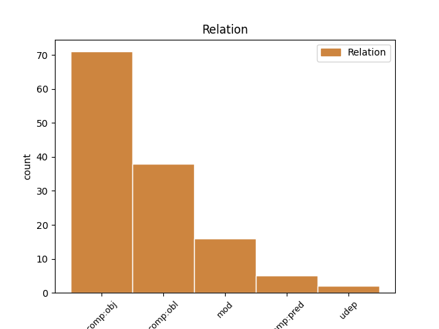
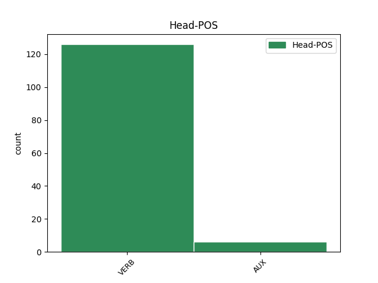
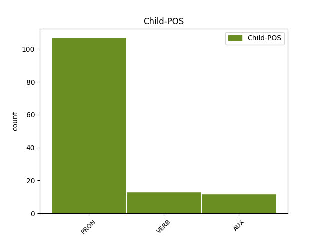

Distribution of features within this leaf



Agreement Rules sorted by frequency.
- When the dependent token is the direct object complements(comp:obj) of the head token, and the dependent token is PRON.
1 Il _ _ _ _ 0 _ _ _
2 poeta _ _ _ _ 0 _ _ _
3 e _ _ _ _ 0 _ _ _
4 critico _ _ _ _ 0 _ _ _
5 T. _ _ _ _ 0 _ _ _
6 S. _ _ _ _ 0 _ _ _
7 Eliot _ _ _ _ 0 _ _ _
8 discusse _ _ _ _ 0 _ _ _
9 contro _ _ _ _ 0 _ _ _
10 Shaw _ _ _ _ 0 _ _ _
11 che _ _ _ _ 0 _ _ _
12 la _ _ _ _ 0 _ _ _
13 " _ _ _ _ 0 _ _ _
14 primitività _ _ _ _ 0 _ _ _
15 " _ _ _ _ 0 _ _ _
16 di _ _ _ _ 0 _ _ _
17 Shakespeare _ _ _ _ 0 _ _ _
18 in _ _ _ _ 0 _ _ _
19 effetti _ _ _ _ 0 _ _ _
20 lo il PRON PC Clitic=Yes|Gender=Masc|Number=Sing|Person=3|PronType=Prs 21 comp:obj _ _
21 rendeva rendere VERB V Mood=Ind|Number=Sing|Person=3|Tense=Imp|VerbForm=Fin 0 _ _ _
22 veramente _ _ _ _ 0 _ _ _
23 moderno _ _ _ _ 0 _ _ _
24 . _ _ _ _ 0 _ _ _
1 Non _ _ _ _ 0 _ _ _
2 è _ _ _ _ 0 _ _ _
3 chiaro _ _ _ _ 0 _ _ _
4 se _ _ _ _ 0 _ _ _
5 queste _ _ _ _ 0 _ _ _
6 figure _ _ _ _ 0 _ _ _
7 rappresentino _ _ _ _ 0 _ _ _
8 individui _ _ _ _ 0 _ _ _
9 reali _ _ _ _ 0 _ _ _
10 , _ _ _ _ 0 _ _ _
11 o _ _ _ _ 0 _ _ _
12 se _ _ _ _ 0 _ _ _
13 l' _ _ _ _ 0 _ _ _
14 " _ _ _ _ 0 _ _ _
15 io _ _ _ _ 0 _ _ _
16 " _ _ _ _ 0 _ _ _
17 di _ _ _ _ 0 _ _ _
18 l' _ _ _ _ 0 _ _ _
19 autore _ _ _ _ 0 _ _ _
20 che _ _ _ _ 0 _ _ _
21 si _ _ _ _ 0 _ _ _
22 rivolge rivolgere VERB V Mood=Ind|Number=Sing|Person=3|Tense=Pres|VerbForm=Fin 0 _ _ _
23 loro loro PRON PE Number=Plur|Person=3|PronType=Prs 22 comp:obl _ _
24 sia _ _ _ _ 0 _ _ _
25 lo _ _ _ _ 0 _ _ _
26 stesso _ _ _ _ 0 _ _ _
27 Shakespeare _ _ _ _ 0 _ _ _
28 , _ _ _ _ 0 _ _ _
29 anche _ _ _ _ 0 _ _ _
30 se _ _ _ _ 0 _ _ _
31 Wordsworth _ _ _ _ 0 _ _ _
32 riteneva _ _ _ _ 0 _ _ _
33 che _ _ _ _ 0 _ _ _
34 con _ _ _ _ 0 _ _ _
35 i _ _ _ _ 0 _ _ _
36 Sonetti _ _ _ _ 0 _ _ _
37 Shakespeare _ _ _ _ 0 _ _ _
38 avesse _ _ _ _ 0 _ _ _
39 " _ _ _ _ 0 _ _ _
40 aperto _ _ _ _ 0 _ _ _
41 il _ _ _ _ 0 _ _ _
42 suo _ _ _ _ 0 _ _ _
43 cuore _ _ _ _ 0 _ _ _
44 " _ _ _ _ 0 _ _ _
45 . _ _ _ _ 0 _ _ _
1 Shakespare _ _ _ _ 0 _ _ _
2 li _ _ _ _ 0 _ _ _
3 mescola mescolare VERB V Mood=Ind|Number=Sing|Person=3|Tense=Pres|VerbForm=Fin 0 _ _ _
4 per _ _ _ _ 0 _ _ _
5 tutta _ _ _ _ 0 _ _ _
6 la _ _ _ _ 0 _ _ _
7 sua _ _ _ _ 0 _ _ _
8 carriera _ _ _ _ 0 _ _ _
9 , _ _ _ _ 0 _ _ _
10 Romeo _ _ _ _ 0 _ _ _
11 e _ _ _ _ 0 _ _ _
12 Giulietta _ _ _ _ 0 _ _ _
13 è essere AUX V Mood=Ind|Number=Sing|Person=3|Tense=Pres|VerbForm=Fin 3 mod _ _
14 forse _ _ _ _ 0 _ _ _
15 l' _ _ _ _ 0 _ _ _
16 esempio _ _ _ _ 0 _ _ _
17 migliore _ _ _ _ 0 _ _ _
18 di _ _ _ _ 0 _ _ _
19 questa _ _ _ _ 0 _ _ _
20 fusione _ _ _ _ 0 _ _ _
21 di _ _ _ _ 0 _ _ _
22 stili _ _ _ _ 0 _ _ _
23 . _ _ _ _ 0 _ _ _
1 " _ _ _ _ 0 _ _ _
2 quel _ _ _ _ 0 _ _ _
3 re _ _ _ _ 0 _ _ _
4 di _ _ _ _ 0 _ _ _
5 uno _ _ _ _ 0 _ _ _
6 Shakespeare _ _ _ _ 0 _ _ _
7 " _ _ _ _ 0 _ _ _
8 , _ _ _ _ 0 _ _ _
9 il _ _ _ _ 0 _ _ _
10 saggista _ _ _ _ 0 _ _ _
11 Thomas _ _ _ _ 0 _ _ _
12 Carlyle _ _ _ _ 0 _ _ _
13 scrisse scrivere VERB V Mood=Ind|Number=Sing|Person=3|Tense=Past|VerbForm=Fin 0 _ _ _
14 in _ _ _ _ 0 _ _ _
15 il _ _ _ _ 0 _ _ _
16 1840 _ _ _ _ 0 _ _ _
17 , _ _ _ _ 0 _ _ _
18 " _ _ _ _ 0 _ _ _
19 egli _ _ _ _ 0 _ _ _
20 non _ _ _ _ 0 _ _ _
21 risplende risplendere VERB V Mood=Ind|Number=Sing|Person=3|Tense=Pres|VerbForm=Fin 13 mod _ SpaceAfter=No
22 , _ _ _ _ 0 _ _ _
23 tra _ _ _ _ 0 _ _ _
24 la _ _ _ _ 0 _ _ _
25 sovranità _ _ _ _ 0 _ _ _
26 incoronata _ _ _ _ 0 _ _ _
27 , _ _ _ _ 0 _ _ _
28 sopra _ _ _ _ 0 _ _ _
29 noi _ _ _ _ 0 _ _ _
30 tutti _ _ _ _ 0 _ _ _
31 , _ _ _ _ 0 _ _ _
32 come _ _ _ _ 0 _ _ _
33 il _ _ _ _ 0 _ _ _
34 più _ _ _ _ 0 _ _ _
35 nobile _ _ _ _ 0 _ _ _
36 , _ _ _ _ 0 _ _ _
37 il _ _ _ _ 0 _ _ _
38 più _ _ _ _ 0 _ _ _
39 gentile _ _ _ _ 0 _ _ _
40 , _ _ _ _ 0 _ _ _
41 e _ _ _ _ 0 _ _ _
42 il _ _ _ _ 0 _ _ _
43 più _ _ _ _ 0 _ _ _
44 forte _ _ _ _ 0 _ _ _
45 di _ _ _ _ 0 _ _ _
46 i _ _ _ _ 0 _ _ _
47 segni _ _ _ _ 0 _ _ _
48 spericolati _ _ _ _ 0 _ _ _
49 ; _ _ _ _ 0 _ _ _
1 Anche _ _ _ _ 0 _ _ _
2 il _ _ _ _ 0 _ _ _
3 funzionamento _ _ _ _ 0 _ _ _
4 di _ _ _ _ 0 _ _ _
5 il _ _ _ _ 0 _ _ _
6 precedente _ _ _ _ 0 _ _ _
7 gruppo _ _ _ _ 0 _ _ _
8 di _ _ _ _ 0 _ _ _
9 programmi _ _ _ _ 0 _ _ _
10 è _ _ _ _ 0 _ _ _
11 molto _ _ _ _ 0 _ _ _
12 istruttivo _ _ _ _ 0 _ _ _
13 , _ _ _ _ 0 _ _ _
14 in _ _ _ _ 0 _ _ _
15 quanto _ _ _ _ 0 _ _ _
16 ci _ _ _ _ 0 _ _ _
17 dice dire VERB V Mood=Ind|Number=Sing|Person=3|Tense=Pres|VerbForm=Fin 0 _ _ _
18 quale _ _ _ _ 0 _ _ _
19 non _ _ _ _ 0 _ _ _
20 dovrebbe dovere AUX VM Mood=Cnd|Number=Sing|Person=3|Tense=Pres|VerbForm=Fin 17 comp:obj _ _
21 essere _ _ _ _ 0 _ _ _
22 il _ _ _ _ 0 _ _ _
23 ruolo _ _ _ _ 0 _ _ _
24 di _ _ _ _ 0 _ _ _
25 le _ _ _ _ 0 _ _ _
26 linee _ _ _ _ 0 _ _ _
27 direttrici _ _ _ _ 0 _ _ _
28 . _ _ _ _ 0 _ _ _
1 Questa _ _ _ _ 0 _ _ _
2 è _ _ _ _ 0 _ _ _
3 carne _ _ _ _ 0 _ _ _
4 di _ _ _ _ 0 _ _ _
5 balena _ _ _ _ 0 _ _ _
6 , _ _ _ _ 0 _ _ _
7 che _ _ _ _ 0 _ _ _
8 ho _ _ _ _ 0 _ _ _
9 fotografato _ _ _ _ 0 _ _ _
10 in _ _ _ _ 0 _ _ _
11 un _ _ _ _ 0 _ _ _
12 negozio _ _ _ _ 0 _ _ _
13 di _ _ _ _ 0 _ _ _
14 alimentari _ _ _ _ 0 _ _ _
15 a _ _ _ _ 0 _ _ _
16 Tokyo _ _ _ _ 0 _ _ _
17 - _ _ _ _ 0 _ _ _
18 ma _ _ _ _ 0 _ _ _
19 lo lo PRON PC Clitic=Yes|Gender=Masc|Number=Sing|Person=3|PronType=Prs 20 comp:pred _ _
20 è essere AUX V Mood=Ind|Number=Sing|Person=3|Tense=Pres|VerbForm=Fin 0 _ _ _
21 davvero _ _ _ _ 0 _ _ _
22 ? _ _ _ _ 0 _ _ _
1 Gli _ _ _ _ 0 _ _ _
2 ucraini _ _ _ _ 0 _ _ _
3 hanno _ _ _ _ 0 _ _ _
4 dimostrato _ _ _ _ 0 _ _ _
5 la _ _ _ _ 0 _ _ _
6 loro _ _ _ _ 0 _ _ _
7 devozione _ _ _ _ 0 _ _ _
8 a _ _ _ _ 0 _ _ _
9 l' _ _ _ _ 0 _ _ _
10 Unione _ _ _ _ 0 _ _ _
11 Europea _ _ _ _ 0 _ _ _
12 che _ _ _ _ 0 _ _ _
13 è _ _ _ _ 0 _ _ _
14 essa _ _ _ _ 0 _ _ _
15 stessa _ _ _ _ 0 _ _ _
16 disperatamente _ _ _ _ 0 _ _ _
17 divisa _ _ _ _ 0 _ _ _
18 , _ _ _ _ 0 _ _ _
19 con _ _ _ _ 0 _ _ _
20 una _ _ _ _ 0 _ _ _
21 crisi _ _ _ _ 0 _ _ _
22 di _ _ _ _ 0 _ _ _
23 l' _ _ _ _ 0 _ _ _
24 euro _ _ _ _ 0 _ _ _
25 che _ _ _ _ 0 _ _ _
26 mette mettere VERB V Mood=Ind|Number=Sing|Person=3|Tense=Pres|VerbForm=Fin 0 _ _ _
27 Paesi _ _ _ _ 0 _ _ _
28 creditori _ _ _ _ 0 _ _ _
29 e _ _ _ _ 0 _ _ _
30 debitori _ _ _ _ 0 _ _ _
31 gli _ _ _ _ 0 _ _ _
32 uni uno PRON PE Gender=Masc|Number=Plur|Person=3|PronType=Prs 26 udep _ _
33 contro _ _ _ _ 0 _ _ _
34 gli _ _ _ _ 0 _ _ _
35 altri _ _ _ _ 0 _ _ _
36 . _ _ _ _ 0 _ _ _
Disagree Examples:
1 Vi vi PRON PC Clitic=Yes|Number=Plur|Person=2|PronType=Prs 2 comp:obj _ _
2 invito invitare VERB V Mood=Ind|Number=Sing|Person=1|Tense=Pres|VerbForm=Fin 0 _ _ _
3 pertanto _ _ _ _ 0 _ _ _
4 ad _ _ _ _ 0 _ _ _
5 alzar _ _ _ _ 0 _ _ _
6 vi _ _ _ _ 0 _ _ _
7 in _ _ _ _ 0 _ _ _
8 piedi _ _ _ _ 0 _ _ _
9 per _ _ _ _ 0 _ _ _
10 osservare _ _ _ _ 0 _ _ _
11 appunto _ _ _ _ 0 _ _ _
12 un _ _ _ _ 0 _ _ _
13 minuto _ _ _ _ 0 _ _ _
14 di _ _ _ _ 0 _ _ _
15 silenzio _ _ _ _ 0 _ _ _
16 . _ _ _ _ 0 _ _ _
1 Su _ _ _ _ 0 _ _ _
2 richiesta _ _ _ _ 0 _ _ _
3 di _ _ _ _ 0 _ _ _
4 un _ _ _ _ 0 _ _ _
5 deputato _ _ _ _ 0 _ _ _
6 francese _ _ _ _ 0 _ _ _
7 , _ _ _ _ 0 _ _ _
8 l' _ _ _ _ 0 _ _ _
9 onorevole _ _ _ _ 0 _ _ _
10 Zimeray _ _ _ _ 0 _ _ _
11 , _ _ _ _ 0 _ _ _
12 è _ _ _ _ 0 _ _ _
13 già _ _ _ _ 0 _ _ _
14 stata _ _ _ _ 0 _ _ _
15 presentata _ _ _ _ 0 _ _ _
16 una _ _ _ _ 0 _ _ _
17 petizione _ _ _ _ 0 _ _ _
18 , _ _ _ _ 0 _ _ _
19 che _ _ _ _ 0 _ _ _
20 ha _ _ _ _ 0 _ _ _
21 avuto _ _ _ _ 0 _ _ _
22 molti _ _ _ _ 0 _ _ _
23 firmatari _ _ _ _ 0 _ _ _
24 tra _ _ _ _ 0 _ _ _
25 cui _ _ _ _ 0 _ _ _
26 il _ _ _ _ 0 _ _ _
27 sottoscritto _ _ _ _ 0 _ _ _
28 , _ _ _ _ 0 _ _ _
29 ma _ _ _ _ 0 _ _ _
30 le le PRON PC Clitic=Yes|Gender=Fem|Number=Sing|Person=3|PronType=Prs 31 comp:obl _ _
31 chiedo chiedere VERB V Mood=Ind|Number=Sing|Person=1|Tense=Pres|VerbForm=Fin 0 _ _ _
32 , _ _ _ _ 0 _ _ _
33 in _ _ _ _ 0 _ _ _
34 conformità _ _ _ _ 0 _ _ _
35 con _ _ _ _ 0 _ _ _
36 l' _ _ _ _ 0 _ _ _
37 indirizzo _ _ _ _ 0 _ _ _
38 ormai _ _ _ _ 0 _ _ _
39 costantemente _ _ _ _ 0 _ _ _
40 espresso _ _ _ _ 0 _ _ _
41 da _ _ _ _ 0 _ _ _
42 il _ _ _ _ 0 _ _ _
43 parlamento _ _ _ _ 0 _ _ _
44 europeo _ _ _ _ 0 _ _ _
45 e _ _ _ _ 0 _ _ _
46 da _ _ _ _ 0 _ _ _
47 tutta _ _ _ _ 0 _ _ _
48 la _ _ _ _ 0 _ _ _
49 comunità _ _ _ _ 0 _ _ _
50 europea _ _ _ _ 0 _ _ _
51 , _ _ _ _ 0 _ _ _
52 di _ _ _ _ 0 _ _ _
53 intervenire _ _ _ _ 0 _ _ _
54 , _ _ _ _ 0 _ _ _
55 con _ _ _ _ 0 _ _ _
56 il _ _ _ _ 0 _ _ _
57 prestigio _ _ _ _ 0 _ _ _
58 di _ _ _ _ 0 _ _ _
59 la _ _ _ _ 0 _ _ _
60 sua _ _ _ _ 0 _ _ _
61 carica _ _ _ _ 0 _ _ _
62 e _ _ _ _ 0 _ _ _
63 di _ _ _ _ 0 _ _ _
64 l' _ _ _ _ 0 _ _ _
65 istituzione _ _ _ _ 0 _ _ _
66 che _ _ _ _ 0 _ _ _
67 lei _ _ _ _ 0 _ _ _
68 rappresenta _ _ _ _ 0 _ _ _
69 , _ _ _ _ 0 _ _ _
70 presso _ _ _ _ 0 _ _ _
71 il _ _ _ _ 0 _ _ _
72 presidente _ _ _ _ 0 _ _ _
73 e _ _ _ _ 0 _ _ _
74 il _ _ _ _ 0 _ _ _
75 governatore _ _ _ _ 0 _ _ _
76 di _ _ _ _ 0 _ _ _
77 il _ _ _ _ 0 _ _ _
78 Texas _ _ _ _ 0 _ _ _
79 Bush _ _ _ _ 0 _ _ _
80 , _ _ _ _ 0 _ _ _
81 che _ _ _ _ 0 _ _ _
82 ha _ _ _ _ 0 _ _ _
83 il _ _ _ _ 0 _ _ _
84 potere _ _ _ _ 0 _ _ _
85 di _ _ _ _ 0 _ _ _
86 sospendere _ _ _ _ 0 _ _ _
87 la _ _ _ _ 0 _ _ _
88 condanna _ _ _ _ 0 _ _ _
89 a _ _ _ _ 0 _ _ _
90 morte _ _ _ _ 0 _ _ _
91 e _ _ _ _ 0 _ _ _
92 di _ _ _ _ 0 _ _ _
93 graziare _ _ _ _ 0 _ _ _
94 il _ _ _ _ 0 _ _ _
95 condannato _ _ _ _ 0 _ _ _
96 . _ _ _ _ 0 _ _ _
1 La la PRON PC Clitic=Yes|Gender=Fem|Number=Sing|Person=3|PronType=Prs 2 comp:obj _ _
2 ringrazio ringraziare VERB V Mood=Ind|Number=Sing|Person=1|Tense=Pres|VerbForm=Fin 0 _ _ _
3 , _ _ _ _ 0 _ _ _
4 onorevole _ _ _ _ 0 _ _ _
5 Segni _ _ _ _ 0 _ _ _
6 , _ _ _ _ 0 _ _ _
7 lo _ _ _ _ 0 _ _ _
8 farò _ _ _ _ 0 _ _ _
9 volentieri _ _ _ _ 0 _ _ _
10 . _ _ _ _ 0 _ _ _
1 La _ _ _ _ 0 _ _ _
2 ringrazio _ _ _ _ 0 _ _ _
3 , _ _ _ _ 0 _ _ _
4 onorevole _ _ _ _ 0 _ _ _
5 Segni _ _ _ _ 0 _ _ _
6 , _ _ _ _ 0 _ _ _
7 lo lo PRON PC Clitic=Yes|Gender=Masc|Number=Sing|Person=3|PronType=Prs 8 comp:obj _ _
8 farò fare VERB V Mood=Ind|Number=Sing|Person=1|Tense=Fut|VerbForm=Fin 0 _ _ _
9 volentieri _ _ _ _ 0 _ _ _
10 . _ _ _ _ 0 _ _ _
1 Signora _ _ _ _ 0 _ _ _
2 presidente _ _ _ _ 0 _ _ _
3 , _ _ _ _ 0 _ _ _
4 mi mi PRON PC Clitic=Yes|Number=Sing|Person=1|PronType=Prs 5 comp:obl _ _
5 permetta permettere VERB V Mood=Sub|Number=Sing|Person=3|Tense=Pres|VerbForm=Fin 0 _ _ _
6 di _ _ _ _ 0 _ _ _
7 far _ _ _ _ 0 _ _ _
8 le _ _ _ _ 0 _ _ _
9 innanzi _ _ _ _ 0 _ _ _
10 tutto _ _ _ _ 0 _ _ _
11 i _ _ _ _ 0 _ _ _
12 miei _ _ _ _ 0 _ _ _
13 complimenti _ _ _ _ 0 _ _ _
14 per _ _ _ _ 0 _ _ _
15 aver _ _ _ _ 0 _ _ _
16 tenuto _ _ _ _ 0 _ _ _
17 fede _ _ _ _ 0 _ _ _
18 a _ _ _ _ 0 _ _ _
19 la _ _ _ _ 0 _ _ _
20 parola _ _ _ _ 0 _ _ _
21 data _ _ _ _ 0 _ _ _
22 . _ _ _ _ 0 _ _ _